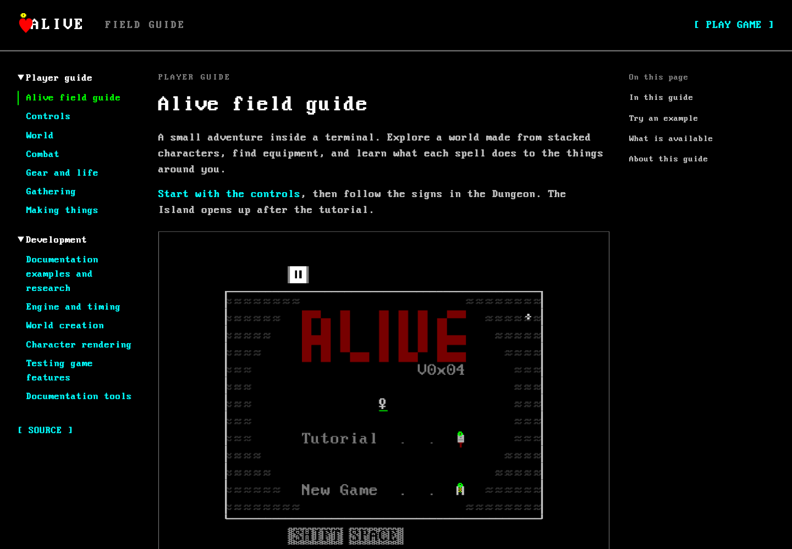
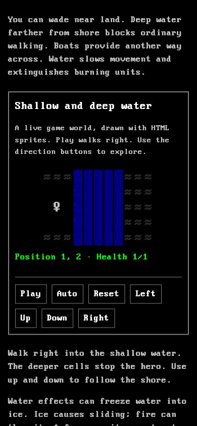

DEVELOPMENT
Documentation examples and research
The guide was checked against the repository on 6 November 2026. The design reference is alive_Docs.pdf (39 pages). Its brief feature descriptions and sprite illustrations guided the writing and presentation. Code and browser behavior take precedence over planned features in that file.
Sources checked
| Topic | Source |
|---|---|
| Controls and touch input | components/Controls/index.tsx, Keyboard, Paused |
| Playable class restriction | game/assets/sequences.ts, displayClass |
| Starting stats and leveling | game/balancing/classes.ts, engine/systems/leveling.ts |
| Worlds and tutorial tasks | game/levels/index.ts, menu, tutorial, island, game/assets/quests.ts |
| Terrain, structures, and cell legend | bindings/creation.ts, engine/systems/movement.ts, push.ts, enter.ts |
| Damage, spells, and conditions | engine/systems/damage.ts, magic.ts, burn.ts, freeze.ts, game/balancing/abilities.ts |
| Tools and crops | game/balancing/harvesting.ts, engine/systems/harvest.ts, trigger.ts |
| Fishing and catches | game/balancing/fishing.ts, engine/systems/fishing.ts |
| Recipes and construction | game/balancing/crafting.ts, brewing.ts, forging.ts, building.ts, engine/systems/build.ts |
| Food, potions, and death | engine/systems/consume.ts, fate.ts, drop.ts |
| Font, colors, and layered sprites | components/App/index.css, components/Row, game/assets/colors.ts, ui.ts, utils.ts |
| Simulation and verification | engine/ecs.ts, components/Systems, testing/harness.ts, existing movement and rendering tests |
Changes from the design reference
- Space is the spell key, Shift is the skill/tool key, and Enter interacts. Tab changes a popup tab.
- Rogue is the normally selectable class. Other class definitions are not presented as unlocked.
- Materials and elements use the current item types, including air. The old world and multiplayer lists are not presented as released game modes.
- Recipes import the current tables. Old coin fees and essence recipes are not copied into current reference tables.
- Current equipment and bag menus replace the PDF's claim that equipment never needs a separate selection screen.
- The three implemented level configurations are Menu, Dungeon, and Island.
Example implementation
scenes.ts imports the existing headless game harness for movement, water, and crate pushing. It draws positioned sprite layers in a small HTML grid. The harness runs the real systems; the grid omits fog and lighting so the rule stays visible.
Reference scenes import balancing tables and helpers directly. Their Play action selects the next entry; Auto repeats that action. They do not implement a second crafting, fishing, or combat system. The forge reference uses getForgeOptions, so supported upgrades follow the same rules as the game.
The scene runner in index.ts owns timers and controls. Each reset creates fresh scene state. Hidden or offscreen examples stop their timers. The docs bundle uses a classic script because jsfxr's CommonJS code assigns an undeclared global; strict module execution would fail before any example starts.
Visual evidence
The PDF's first page was rendered and inspected as a reference. The running game's title screen, menu, and sign popup were captured before comparing the docs' font, character sprites, colors, and borders.
Screenshots in docs/media/ show the game and documentation at desktop and phone widths. Browser checks cover navigation, all imported examples, manual movement, blocked water, crate pushing, timer pause/reset, keyboard focus, and horizontal overflow. The documentation renderer intentionally omits the game's Three.js lighting and camera; these examples explain a rule or show its current data.
The inspected captures are:



The checks confirmed the bundled DOS glyphs, terminal palette, layered sprites, readable prose, box borders, and controls that stay inside a phone viewport.
Maintenance
When a rule changes, update the player page and its source-side explanation if needed. Imported tables follow balancing changes automatically. Re-run the browser examples after changing the ECS or sprite helpers, since a successful bundle does not prove that a scene can start.